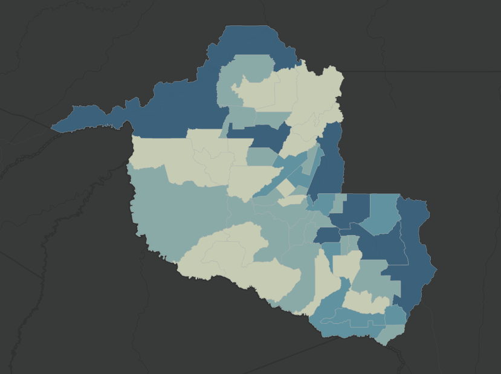

Plataforma integrada de geoprocessamento com base de dados geoespaciais, permitindo visualização, análise e compartilhamento de mapas interativos.
Camadas Geográficas
Municípios Integrados
Mapas Produzidos
Um SIG é uma plataforma tecnológica capaz de integrar, armazenar, analisar e apresentar informações geográficas em mapas digitais interativos.
Na SEDEC, o SIG auxilia no planejamento territorial, monitoramento de áreas estratégicas e geração de informações para apoiar decisões públicas.

Aquisição de informações espaciais, imagens de satélite e dados territoriais.
Organização e armazenamento das bases de dados espaciais.
Processamento dos dados para gerar informações estratégicas.
Mapas interativos e dashboards geográficos.
Integração de imagens orbitais e análise territorial.
Monitoramento ambiental através de dados espaciais.
Análise de áreas produtivas e potencial econômico.